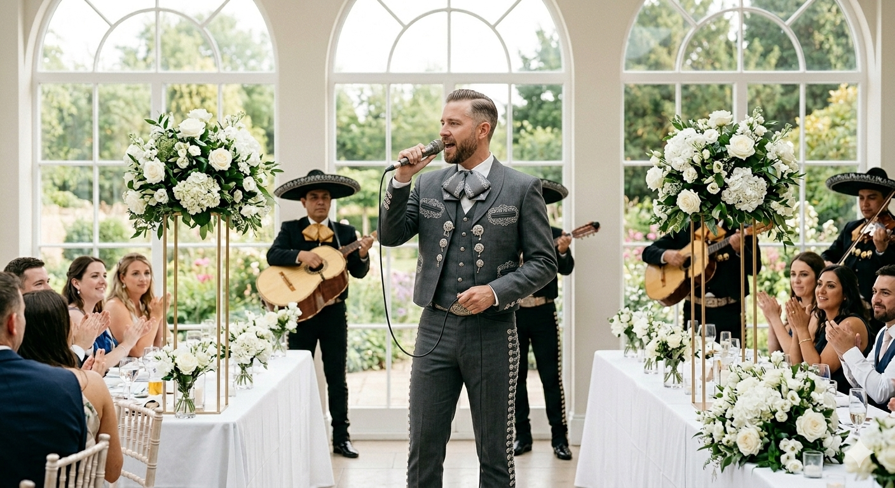

Serenatas tradicionales
Creamos momentos memorables con mariachis, chirimías, cantantes y solistas que convierten cada ceremonia en una experiencia emotiva, cálida y profesional.

Acompañamiento musical solemne y respetuoso para ceremonias religiosas.
Ver PortafolioEventos sociales, recepciones, cenas y fiestas privadas.
Ofrecemos solistas vocales de diversos géneros (pop, balada, tropical, popular) con pistas profesionales o acompañamiento instrumental.
Versatilidad vocal y un repertorio cuidadosamente seleccionado para cada ambiente.
Cócteles, inauguraciones, cenas románticas y eventos corporativos.
Músicos profesionales (saxofón, piano, guitarra o violín) que crean la atmósfera perfecta para momentos de distinción.
Calidad interpretativa impecable y presencia escénica profesional que eleva el nivel de su evento.
Bodas, exequias, aniversarios y ceremonias religiosas de todo tipo.
Acompañamiento litúrgico profesional con voces líricas o populares y arreglos instrumentales adecuados para el culto sagrado.
Conocimiento profundo de la liturgia y respeto por la solemnidad del momento, garantizando un acompañamiento acorde a la fe.
Contáctanos y permítenos brindarte la mejor asesoría musical para que tu evento sea inolvidable.
Contactar por WhatsApp